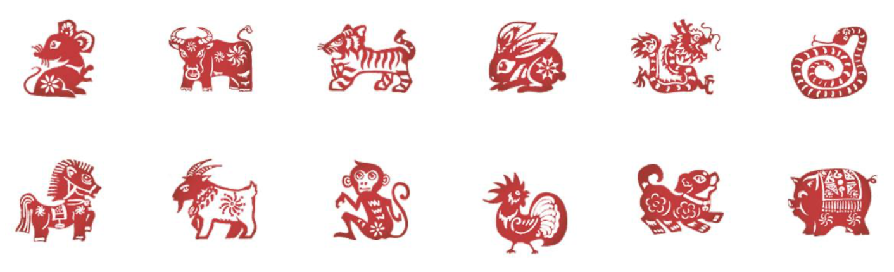

Le Nouvel An chinois est le premier jour du premier mois du calendrier chinois. La fête du printemps (traditionnels : 春節 ; simplifiés : 春节 ; pinyin : chūnjié) marque le début des festivités qui se déroulent sur quinze jours et qui s’achèvent avec la fête des lanternes.
Les célébrations, coutumes et tabous de la fête de printemps varient dans les détails selon les régions ou les époques. La pratique générale veut qu'on s'efforce de repartir sur un nouveau pied après s'être débarrassé des mauvaises influences de l’an passé, accompagné de signes de bon augure. On a recours à des objets ou aliments présentant une homophonie avec un mot de sens auspicieux.
Selon l'astrologie chinoise (en savoir plus clique ici), 2021 est l'année du buffle de métal, qui commencera le 12 février 2021 et durera jusqu'au 31 janvier 2022. L'astrologie chinoise, ou shengxiao (en chinois), correspond à un cycle de douze année, chaque année étant représentée par un animal et un élément. Dans l’ordre, les douze signes astrologiques chinois sont : le rat, le buffle, le tigre, le lapin, le dragon, le serpent, le cheval, le chèvre, le singe, le coq, le chien, le cochon.

En Chine, on croit qu'il y a une relation entre l'homme et les 12 animaux zodiacaux. Les personnes nées l’année de tel animal auront donc les caractéristiques de cet animal. Selon le signe du zodiaque chinois, en plus du caractère, son animal zodiaque affecte également la fortune de cette personne.
Le calendrier chinois étant un calendrier luni-solaire. La date du Nouvel An chinois dans le calendrier grégorien varie d'une année sur l'autre, mais tombe toujours entre le 21 janvier et le 19 février, lors de la deuxième nouvelle lune depuis le solstice d'hiver quand le soleil se trouve dans le signe du Verseau. C’est, comme tous les commencements de mois lunaires chinois, le premier jour d'une nouvelle lune. Par convention, l'alignement astronomique qui signale la nouvelle lune est déterminé à l’observatoire de la Montagne Pourpre à Nankin.
Dans le folklore chinois, Nianshou (chinois traditionnel : 年獸 ; chinois simplifié : 年兽 ; pinyin : nián shòu) ou Nian est un animal maléfique à tête de lion et corps de taureau qui aurait selon la tradition donné son nom à l’année (nián : an ; shòu : bête). Sa légende est liée aux coutumes du Nouvel An chinois. Il est représenté comme un lion des danses de lions, bien que ces derniers soient des animaux auspicieux.
Dans les temps anciens, il existait un animal féroce qui, une fois par hiver, descendait des montagnes ou sortait des bois pour s’approcher des villages, dévorant bêtes et gens sur son passage. Il ne venait qu’à la nuit tombée et disparaissait au lever du jour.
Les années passant, la population finit par connaitre ses points faibles et savoir prédire le soir de sa venue. La bête craignait la lumière, le bruit et la couleur rouge. La résistance fut bientôt au point.
Chaque hiver, à l’approche du soir fatidique, les villageois accrochaient des chiffons rouges aux portes, barricadaient bêtes et gens à l’intérieur et, n’osant pas s’endormir, bavardaient en mangeant les nombreux plats qu’ils avaient préparés en prévision de la nuit de veille. Lorsqu’ils entendaient Nian rôder près de leur maison, ils tapaient sur des casseroles pour le faire fuir. Ils passaient ainsi cette nuit sans dommage.
Par la suite, le dieu stellaire Ziwei (紫微) décida de descendre sur terre pour enchainer Nian, qui cessa définitivement de troubler les humains. Ces coutumes sont répétées la nuit du réveillon à travers les pétards, les feux de bengale et autres feux d’artifice, ainsi que les caractères auspicieux (duilian) tracés sur papier rouge et collés sur les portes.
Selon une légende, il y avait dans l'antiquité un animal étrange et particulièrement féroce avec des cornes sur la tête, nommé nian. L'animal vivait au fond de la mer et mettait pied à terre à la veille du Nouvel An pour dévorer le bétail et les gens. Chaque année, par conséquent, les villageois emmenaient les vieillards et les enfants dans les montagnes désertes pour y fuir la férocité de l'animal.
Une veille du Nouvel An, un mendiant âgé arrive au village de Taohua, une canne à la main, un sac à l'épaule, à la barbe blanche et aux yeux brillants. Une vieille dame de l'est du village l'a persuadé de fuir le nian dans les montagnes. Le vieux monsieur éclate de rire, la main à la barbe : "Si Madame me permet de rester une nuit chez vous, je chasserai l'animal".
A minuit, le nian entre dans le village. S'apercevant que dans la famille de la vieille dame à l'est du village, des papiers rouges ont été collés à la porte et que la maison est particulièrement éclairée, l'animal se jette sur la maison en poussant un cri sauvage. Près de la porte, tout d'un coup s'élèvent des sons pif ! paf ! dans la cour. Pris de frissons des pieds à la tête, l'animal se sauve à toutes jambes. En effet, le nian a peur du rouge, des flammes et des détonations.
Le lendemain, le 1er janvier, les réfugiés sont rentrés au village. Voyant que tout est intact, ils se ruent vers la famille de la vieille dame et ils voient des papiers rouges à la porte, des bouts de bambous qui émettent encore des sons pif ! paf ! dans la cour et quelques bouts de bougies encore en train de brûler dans la maison…
Fous de joie, les villageois changent d'habit et de chapeau pour célébrer l'avènement du bon augure et vont présenter leurs félicitations à leurs parents et amis. L'affaire est rapidement connue dans les villages voisins. On connaît ainsi la façon de chasser le nian.
Désormais, une fois à la veille du Nouvel An, toutes les familles collent des papiers rouges parallèles à la porte, tirent des pétards, allument des bougies toute la nuit et restent éveillées jusqu'au lever du soleil. Au petit matin du 1er janvier, on va se souhaiter la bonne année dans les familles.
Avec sa diffusion, l'usage a évolué pour devenir la plus grande fête traditionnelle du peuple chinois.
Contact : yimei.yue@nouvelle-sorbonne.fr
Projet du cours BD Web - Inalco